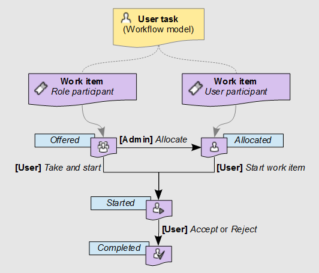
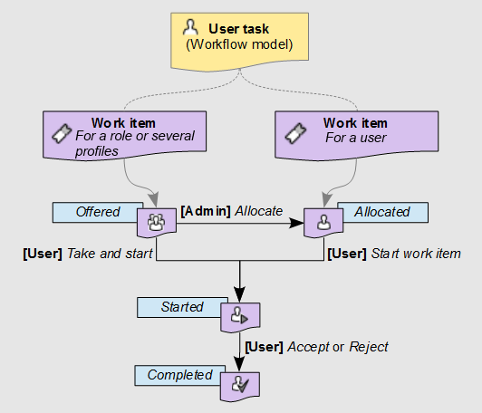

Work items
About work items
A work item is a unit of work that must be performed by a human user as a part of a user task. By default, when a workflow model defines a user task, data workflows that are launched from that model's publications will generate an individual work item for each of the participants listed in the user task.
Work item states
When the data workflow spawns a work item for a modelled user task during execution, the work item passes through several possible states: offered, allocated, started, and completed.
Creation of work items
Default mode
By default, a single work item is generated regardless of the list of defined profiles.
By default, if a single user is defined in the list of profiles, the created work item is in the allocated state.
By default, in other cases, the created work item is in the offered state.
Note
The default behavior described above can be overridden by a programmatic extension defined in the user task. In this case, work items may be generated programmatically and not necessarily based on the user task's list of participants.
Legacy mode
By default, for each user defined as a participant of the user task, the data workflow creates a work item in the allocated state.
By default, for each role defined as a participant of the user task, the data workflow creates a work item in the offered state.
Note
The default behavior described above can be overridden by a programmatic extension defined in the user task. In this case, work items may be generated programmatically and not necessarily based on the user task's list of participants.
Variations of the work item states
When the work item is in the allocated state, the defined user can directly start working on the allocated work item with the 'Take and start' action. The work item's state becomes started.
When the work item is in the offered state, any user or member of the roles to whom the work item is offered can take the work item with the 'Take and start' action'. The work item's state becomes started.
Before a user has claimed the offered work item, a workflow allocation manager can intervene to manually assign the work item to a single user, thus moving the work item to the allocated state. Then, when that user begins work on the work item by performing the action 'Start work item', the work item progresses to the started state.
Finally, after the user who started the work item has finished the assigned action, the concluding accept or reject action moves the work item to the completed state. Once a user completes a work item, the data workflow automatically progresses onto the next step defined in the workflow model.
Diagram of the work item states


Working on work items as a participant
All work items relevant to you as a user (either offered or allocated to you), appear in your work items inbox. When you begin working on a work item, you can add an associated comment that will be visible to other participants of the data workflow, as well as administrators and monitors of the workflow. As long as you are still working on the work item, you can go back and edit this comment.
After you have performed all the necessary actions assigned for the work item, you must signal its completion by clicking either the Accept or Reject button. The labels of these two buttons may differ depending on the context of the work item.
To review the current progress of a data workflow for which you have a waiting work item in your work item inbox, click its 'Preview'  button in the 'Data workflow' column of the table. A pop-up will show an interactive progress view of the data workflow up until this point and the upcoming steps. You can view the details of a step by clicking on that step.
button in the 'Data workflow' column of the table. A pop-up will show an interactive progress view of the data workflow up until this point and the upcoming steps. You can view the details of a step by clicking on that step.
Note
If you interrupt the current session in the middle of a started work item, for example by closing the browser or by logging out, the current work item state is preserved. When you return to the work item, it continues from the point where you left off.
Work item priorities
Work items may carry a priority value, which can be useful for sorting and filtering outstanding work items. The priority of a work item is set at the level of its data workflow, rather than being specific to the individual work item itself. Thus, if a data workflow is considered urgent, all its associated open work items are also considered to be urgent. By default, there are six priority levels ranging from 'Very low' to 'Urgent', however the visual representation and naming of the available priority levels depend on the configuration of your TIBCO EBX® repository.
See also
Related concepts
 User guide table of contents
User guide table of contents